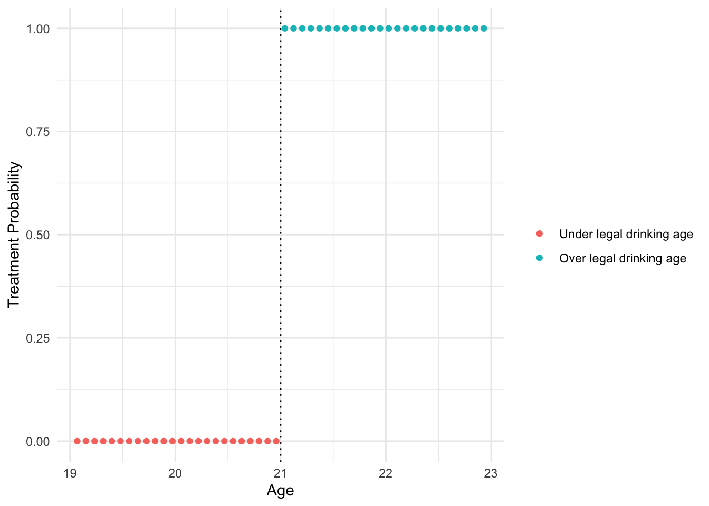

Regression Discontinuity Design (RDD) is a widely used quasi-experimental method for causal inference that leverages a known cutoff in a continuous running variable to assign treatment. By comparing units just above and just below the threshold, RDD estimates the causal effect of treatment in settings where randomization is not feasible but assignment rules are clearly defined. When implemented correctly, it provides highly credible local estimates with minimal modeling assumptions.
By the end of this tutorial, you will be familiar with:
1. Sharp RDD
2. Fuzzy RDD
3. Diagnostic Test
Front-end Matters
The rdrobust package is a comprehensive R toolkit for implementing regression discontinuity designs, offering robust estimation, inference, and visualization tools. It supports both sharp and fuzzy RDD, automatically selects optimal bandwidths, and applies bias-corrected local polynomial regression to improve reliability. Widely used in applied research, rdrobust simplifies credible RDD analysis with minimal manual tuning.
── Conflicts ────────────────────────────────────────── tidyverse_conflicts() ──
✖ dplyr::filter() masks stats::filter()
✖ dplyr::lag() masks stats::lag()
ℹ Use the conflicted package (<http://conflicted.r-lib.org/>) to force all conflicts to become errors
library(estimatr) #for IV estimation
Sharp RDD
Introducing Dataset
The MLDA dataset contains data on individuals near the U.S. legal minimum drinking age of 21, making it ideal for regression discontinuity analysis. Because turning 21 introduces a sudden change in legal access to alcohol, this dataset allows us to examine the causal impact of legal drinking on risky behaviors and outcomes, such as motor vehicle accident deaths.
The treatment/cutoff is age 21. Forcing variable is centered around the cutoff (age-cutoff).
mlda_df <-read_csv("https://raw.githubusercontent.com/seramirezruiz/stats-ii-lab/master/Session%206/data/mlda.csv") # loading data from Mastering Metrics
New names:
Rows: 48 Columns: 25
── Column specification
──────────────────────────────────────────────────────── Delimiter: "," dbl
(25): ...1, agecell, all, allfitted, internal, internalfitted, external,...
ℹ Use `spec()` to retrieve the full column specification for this data. ℹ
Specify the column types or set `show_col_types = FALSE` to quiet this message.
• `` -> `...1`
Before conducting any estimation, it’s useful to visualize treatment assignment relative to the cutoff to check whether the regression discontinuity design is sharp or fuzzy. In a sharp RDD, treatment switches cleanly from 0 to 1 at the threshold—meaning everyone above the cutoff receives treatment, and everyone below does not. This plot shows how the binary treatment variable changes with age.
ggplot(mlda_df, aes(x = agecell, # actual agey = treatment, # are they over 21 or notcolor =factor(treatment))) +geom_point() +labs(x ="Age", y ="Treatment Probability") +scale_color_discrete(name =" ", labels =c("Under legal drinking age", "Over legal drinking age")) +geom_vline(xintercept =21, linetype ="dotted") +# NEW GEOM A VERTICAL LINE!theme_minimal()

We observe a clear and immediate jump at age 21, it confirms that treatment assignment follows a sharp design.
OLS regession
This plot provides a visual overview of the relationship between the running variable (age) and the outcome of interest (mortality rate from motor vehicle accidents). By plotting the outcome against age and adding a vertical line at the cutoff (21), we can explore whether there appears to be a visible discontinuity at the legal drinking age. This kind of exploratory visualization helps assess whether a treatment effect is plausible before running any formal regression — a sharp jump in the outcome at the cutoff would suggest a potential causal impact of legal alcohol access on accident-related mortality.
ggplot(mlda_df, aes(x = agecell, # age y = outcome)) +# mortality rate per 100k accidentsgeom_point() +geom_vline(xintercept =21, linetype ="dotted") +labs(title ="Exploratory plot",x ="Forcing variable (Age)",y ="Mortality rate from motor vehicle \naccidents (per 100,000)") +theme_minimal()
Assume common slope
We begin our analysis with a simple linear model assuming a common slope on both sides of the cutoff. This model regresses the outcome on the treatment indicator and the running variable (forcing, i.e., age-cutoff), without allowing for different trends below and above the threshold. While this approach does not fully capture the local, nonparametric nature of RDD, it helps build intuition about how treatment status and the running variable relate to the outcome.
linear_common_slope <-lm(outcome ~ treatment + forcing, data = mlda_df)summary(linear_common_slope)
Call:
lm(formula = outcome ~ treatment + forcing, data = mlda_df)
Residuals:
Min 1Q Median 3Q Max
-2.5318 -0.8494 -0.1800 0.7577 3.3094
Coefficients:
Estimate Std. Error t value Pr(>|t|)
(Intercept) 29.3560 0.4293 68.386 < 2e-16 ***
treatment 4.5340 0.7680 5.904 4.34e-07 ***
forcing -3.1488 0.3372 -9.337 4.26e-12 ***
---
Signif. codes: 0 '***' 0.001 '**' 0.01 '*' 0.05 '.' 0.1 ' ' 1
Residual standard error: 1.329 on 45 degrees of freedom
Multiple R-squared: 0.7025, Adjusted R-squared: 0.6893
F-statistic: 53.14 on 2 and 45 DF, p-value: 1.419e-12
Results show that crossing the legal drinking age threshold at 21 years old causes an increase of approximately 4.53 motor vehicle accident deaths per 100,000 people.
Different slopes
This model extends the basic linear specification by allowing for different slopes on either side of the cutoff through an interaction between treatment status and the running variable. By including treatment*forcing, we allow the effect of age on the outcome to vary depending on whether an individual is below or above the legal drinking age. This is more flexible than the common slope model and better reflects the structure of an RDD, where treatment is expected to cause a shift in both level and possibly the trend of the outcome. Although still parametric, this model moves us closer to the logic of RDD by capturing differential trends around the cutoff.
linear_different_slope <-lm(outcome ~ treatment*forcing, data = mlda_df)summary(linear_different_slope)
Call:
lm(formula = outcome ~ treatment * forcing, data = mlda_df)
Residuals:
Min 1Q Median 3Q Max
-2.4124 -0.7774 -0.2913 0.8495 3.2378
Coefficients:
Estimate Std. Error t value Pr(>|t|)
(Intercept) 29.9292 0.5308 56.390 < 2e-16 ***
treatment 4.5340 0.7506 6.041 2.94e-07 ***
forcing -2.5676 0.4661 -5.508 1.77e-06 ***
treatment:forcing -1.1624 0.6592 -1.763 0.0848 .
---
Signif. codes: 0 '***' 0.001 '**' 0.01 '*' 0.05 '.' 0.1 ' ' 1
Residual standard error: 1.299 on 44 degrees of freedom
Multiple R-squared: 0.7222, Adjusted R-squared: 0.7032
F-statistic: 38.13 on 3 and 44 DF, p-value: 2.671e-12
Results show that crossing the legal drinking age threshold at 21 years old causes an increase of approximately 4.53 motor vehicle accident deaths per 100,000 people.
Non-linear model
This model incorporates a quadratic specification to allow for curvature in the relationship between age and the outcome on either side of the cutoff. By including both forcing^2 and its interaction with treatment, we allow the outcome to follow a curved trend that can differ above and below the threshold. This is useful when the relationship between the running variable and the outcome is not well captured by a straight line.
quadratic <-lm(outcome ~ forcing +I(forcing^2) +# I tells R to interpret "as is" treatment +I(forcing * treatment) +I((forcing^2) * treatment),data = mlda_df)summary(quadratic)
Results show that crossing the legal drinking age threshold at 21 years old causes an increase of approximately 4.66 motor vehicle accident deaths per 100,000 people.
Using rdrobust package
This model uses the rdrobust package to estimate the treatment effect using local linear regression (LLR), which is the standard nonparametric approach in RDD. Unlike the global polynomial models (lm), rdrobust focuses only on observations close to the cutoff and applies triangular kernel weights that give more importance to points nearer the threshold. The bandwidth is selected automatically using the mean squared error–optimal (MSE) method, helping balance bias and variance. This method provides more credible and robust inference for RDD by minimizing modeling assumptions and emphasizing local comparisons near the cutoff.
llr <-rdrobust(mlda_df$outcome, mlda_df$forcing, c =0,kernel ="tri",bwselect ="mserd")summary(llr)
Sharp RD estimates using local polynomial regression.
Number of Obs. 48
BW type mserd
Kernel Triangular
VCE method NN
Number of Obs. 24 24
Eff. Number of Obs. 6 6
Order est. (p) 1 1
Order bias (q) 2 2
BW est. (h) 0.487 0.487
BW bias (b) 0.738 0.738
rho (h/b) 0.660 0.660
Unique Obs. 24 24
=============================================================================
Method Coef. Std. Err. z P>|z| [ 95% C.I. ]
=============================================================================
Conventional 4.901 2.059 2.380 0.017 [0.864 , 8.937]
Robust - - 1.881 0.060 [-0.198 , 9.674]
=============================================================================
The treatment effect is reprsented by the Conventional row in the output. Crossing the legal drinking age threshold at 21 years old causes an increase of approximately 4.90 motor vehicle accident deaths per 100,000 people.
rdplot(mlda_df$outcome, mlda_df$forcing, c =0,kernel ="tri",title ="Motor Vehicle Accidents Death",x.label ="Age from 21",y.label ="Mortality rate from motor vehicle \naccidents (per 100,000)")
This plot, created using rdplot() from the rdrobust package, visualizes the relationship between the running variable (age, centered at 21) and the outcome (mortality rate), highlighting the discontinuity at the cutoff. Although no polynomial terms are explicitly included in the model, the plot appears curved because rdplot() fits separate local regressions within each bin, and those bins are smoothed to reflect the underlying trend. The shape is driven by local averages rather than a global functional form, making this a nonparametric visualization that adapts to the data without imposing a strict linear or quadratic structure—hence the smooth curves despite the lack of polynomial terms.
Adding Quadratic Term in rdrobust
This model uses rdrobust to estimate the treatment effect with a local quadratic regression by setting p = 2. Compared to the default local linear model, the quadratic specification allows the relationship between the running variable and the outcome to curve on either side of the cutoff, offering more flexibility in capturing the underlying trend near the threshold.
quadratic_rdrobust <-rdrobust(mlda_df$outcome, mlda_df$forcing, c =0,kernel ="tri",bwselect ="mserd",p =2) #polynomial 2summary(quadratic_rdrobust)
Sharp RD estimates using local polynomial regression.
Number of Obs. 48
BW type mserd
Kernel Triangular
VCE method NN
Number of Obs. 24 24
Eff. Number of Obs. 10 10
Order est. (p) 2 2
Order bias (q) 3 3
BW est. (h) 0.821 0.821
BW bias (b) 1.074 1.074
rho (h/b) 0.764 0.764
Unique Obs. 24 24
=============================================================================
Method Coef. Std. Err. z P>|z| [ 95% C.I. ]
=============================================================================
Conventional 4.778 2.337 2.044 0.041 [0.197 , 9.360]
Robust - - 1.627 0.104 [-0.911 , 9.811]
=============================================================================
Crossing the legal drinking age threshold at 21 years old causes an increase of approximately 4.78 motor vehicle accident deaths per 100,000 people.
rdplot(mlda_df$outcome, mlda_df$forcing, c =0,kernel ="tri",p =2,title ="Motor Vehicle Accidents Death",x.label ="Age from 21",y.label ="Mortality rate from motor vehicle \naccidents (per 100,000)")
This plot uses rdplot() with a local quadratic fit (p = 2) to visualize the relationship between age and motor vehicle accident mortality rates around the legal drinking age cutoff. Unlike the default local linear version, this plot allows for curvature within each side of the threshold, potentially capturing more subtle patterns in the data.
Although local linear models are often preferred for their simplicity, in this case the local quadratic model appears to better capture the data trend, suggesting some curvature in the outcome near the cutoff.
Fuzzy RDD
Introducing Data
In this dataset, students are offered access to a tutoring program based on their entrance exam score. Students who score below 70 are eligible for tutoring. The running variable is the exam score, the cutoff is 70, and the treatment is actual participation in tutoring.
Rows: 1000 Columns: 5
── Column specification ────────────────────────────────────────────────────────
Delimiter: ","
chr (1): tutoring_text
dbl (3): id, entrance_exam, exit_exam
lgl (1): tutoring
ℹ Use `spec()` to retrieve the full column specification for this data.
ℹ Specify the column types or set `show_col_types = FALSE` to quiet this message.
As we did in the Sharp RDD section, we begin by visualizing the data to determine whether the design is sharp or fuzzy. The graph reveals that some ineligible students (those who scored above 70) still participated in the tutoring program, while some eligible students (below 70) did not enroll. This imperfect compliance indicates that the treatment assignment is not perfectly determined by the cutoff, confirming that this is a fuzzy RDD rather than a sharp one.
ggplot(tutoring, aes(x = entrance_exam, y = tutoring_text, color = entrance_exam <=70)) +# Make points small and semi-transparent since there are lots of themgeom_point(size =1.5, alpha =0.5,position =position_jitter(width =0, height =0.25, seed =1234)) +# Add vertical linegeom_vline(xintercept =70) +# Add labelslabs(x ="Entrance exam score", y ="Participated in tutoring program") +# Turn off the color legend, since it's redundantguides(color =FALSE)
Warning: The `<scale>` argument of `guides()` cannot be `FALSE`. Use "none" instead as
of ggplot2 3.3.4.
We can also examine the distribution of students above and below the cutoff within each treatment group using this summary table. The table shows how many students received tutoring or not, and whether they scored above or below the threshold. Here we have 36 people who should have used tutoring who didn’t, and we have 116 people who somehow snuck into the program.
This plot shows the proportion of students who participated in the tutoring program across different entrance exam score bins. Instead of a binary treatment jump, we observe a gradual shift in the probability of receiving treatment around the cutoff score of 70. While there is a noticeable increase in tutoring participation below the cutoff, the change is not from 0 to 1, but rather a discrete jump in probability. This further supports the fuzzy RDD framework, where treatment assignment is not deterministic but exhibits a discontinuity in likelihood at the threshold.
tutoring_with_bins <- tutoring %>%mutate(exam_binned =cut(entrance_exam, breaks =seq(0, 100, 5))) %>%# Group by each of the new bins and tutoring statusgroup_by(exam_binned, tutoring) %>%# Count how many people are in each test bin + used/didn't use tutoringsummarize(n =n()) %>%# Make this summarized data wider so that there's a column for tutoring and no tutoringpivot_wider(names_from ="tutoring", values_from ="n", values_fill =0) %>%rename(tutor_yes =`TRUE`, tutor_no =`FALSE`) %>%# Find the probability of tutoring in each bin by taking# the count of yes / count of yes + count of nomutate(prob_tutoring = tutor_yes / (tutor_yes + tutor_no))
`summarise()` has grouped output by 'exam_binned'. You can override using the
`.groups` argument.
# Plot this puppyggplot(tutoring_with_bins, aes(x = exam_binned, y = prob_tutoring)) +geom_col() +geom_vline(xintercept =8.5) +labs(x ="Entrance exam score", y ="Proportion of people participating in program")
While we might expect a visible jump in exit scores at the threshold if tutoring had a strong effect, the treatment effect is not immediately obvious here. The trend lines show some difference in slopes, but no clear discontinuity, making the gap harder to detect visually. This highlights why we need formal estimation methods—like fuzzy RDD with 2SLS—to isolate the causal effect of tutoring, especially when treatment is not perfectly assigned and outcomes are noisy.
ggplot(tutoring, aes(x = entrance_exam, y = exit_exam, color = tutoring)) +geom_point(size =1, alpha =0.5) +# Add a line based on a linear model for the people scoring less than 70geom_smooth(data =filter(tutoring, entrance_exam <=70), method ="lm") +# Add a line based on a linear model for the people scoring 70 or moregeom_smooth(data =filter(tutoring, entrance_exam >70), method ="lm") +geom_vline(xintercept =70) +labs(x ="Entrance exam score", y ="Exit exam score", color ="Used tutoring")
`geom_smooth()` using formula = 'y ~ x'
`geom_smooth()` using formula = 'y ~ x'
Instrumental Variable
Let’s create the variables needed to implement a fuzzy regression discontinuity design using instrumental variables (IV). Just like in the sharp RDD, we begin by centering the running variable (entrance_exam) at the cutoff (70) so that the cutoff point becomes zero. This makes the interpretation of our regression coefficients much clearer.
In addition to centering, we create a new variable called below_cutoff, which serves as our instrument—it equals TRUE if a student scored below 70 and was thus eligible for tutoring, and FALSE otherwise. This variable doesn’t directly determine whether the student actually received tutoring (treatment), but it does affect the likelihood of receiving it, satisfying the relevance requirement for IV. We’ll use this instrument in a two-stage least squares (2SLS) model to estimate the local average treatment effect of tutoring on exit exam scores.
The outcome is the exit exam score, and the treatment of interest is tutoring. Because tutoring was not perfectly assigned based on the entrance exam cutoff, we instrument for tutoring using the below_cutoff variable—whether a student scored below the threshold of 70.
The tutoring program causes an average increase of 9.74 points on the final exam for compliers in the bandwidth.
Using rdrobust
This code estimates the causal effect of tutoring on exit exam scores using a fuzzy regression discontinuity design with the rdrobust() package. Because tutoring was not perfectly assigned at the cutoff score of 70, we specify fuzzy = tutoring$tutoring to indicate that treatment status was only partially determined by crossing the threshold. The function uses local polynomial regression and automatically selects an optimal bandwidth to focus on observations near the cutoff. By treating the cutoff-based eligibility as an instrument for actual tutoring participation, this model provides a robust estimate of the local average treatment effect (LATE) for students whose tutoring decision was influenced by whether they scored just below or above the threshold.
Fuzzy RD estimates using local polynomial regression.
Number of Obs. 1000
BW type mserd
Kernel Triangular
VCE method NN
Number of Obs. 238 762
Eff. Number of Obs. 170 347
Order est. (p) 1 1
Order bias (q) 2 2
BW est. (h) 12.985 12.985
BW bias (b) 19.733 19.733
rho (h/b) 0.658 0.658
Unique Obs. 238 762
First-stage estimates.
=============================================================================
Method Coef. Std. Err. z P>|z| [ 95% C.I. ]
=============================================================================
Conventional -0.708 0.073 -9.751 0.000 [-0.850 , -0.565]
Robust - - -8.424 0.000 [-0.907 , -0.565]
=============================================================================
Treatment effect estimates.
=============================================================================
Method Coef. Std. Err. z P>|z| [ 95% C.I. ]
=============================================================================
Conventional 9.683 1.893 5.116 0.000 [5.973 , 13.393]
Robust - - 4.258 0.000 [5.210 , 14.095]
=============================================================================
We look into the Treatment effect estimates table: with a triangular kernel and a bandwidth of ±12.96, the causal effect of the tutoring program for compliers in the bandwidth is 9.683.
Diagnostic
Density Test (McCrary Test)
McCrary density test uses the rddensity package to check for potential manipulation of the running variable—in this case, age—at the cutoff point of 21, which is the legal drinking age. In regression discontinuity designs, one of the key assumptions is that individuals cannot precisely manipulate their value of the running variable to sort just above or below the threshold. If such manipulation exists, it could undermine the validity of the design by introducing selection bias.
The rddensity() function estimates the density of observations on either side of the cutoff and tests whether there is a discontinuity in the number of observations at the threshold. If individuals could somehow influence their age in the dataset to appear just under or just over 21 (e.g., through data reporting errors or sample construction), we would expect to see a significant jump or drop in the density.
The output from summary(rdd_result) includes a test statistic and a p-value. If the p-value is large (e.g., > 0.05), it suggests that there is no significant discontinuity in the density, meaning the distribution of age around 21 appears smooth and continuous. This supports the validity of the RDD, as it suggests there is no evidence of manipulation near the cutoff. The rdplotdensity() function provides a visual representation of this test, allowing you to confirm that the number of observations is balanced across the cutoff and there is no visible jump in the density plot.
library(rddensity)# Run McCrary density testrdd_result <-rddensity(X = mlda_df$agecell, c =21)# Show summary and plotsummary(rdd_result)
Manipulation testing using local polynomial density estimation.
Number of obs = 48
Model = unrestricted
Kernel = triangular
BW method = estimated
VCE method = jackknife
c = 21 Left of c Right of c
Number of obs 24 24
Eff. Number of obs 24 24
Order est. (p) 2 2
Order bias (q) 3 3
BW est. (h) 1.932 1.932
Method T P > |T|
Robust 0 1
P-values of binomial tests (H0: p=0.5).
Window Length / 2 <c >=c P>|T|
1.603 20 20 1.0000
1.639 20 20 1.0000
1.676 20 20 1.0000
1.712 21 21 1.0000
1.749 21 21 1.0000
1.785 22 22 1.0000
1.822 22 22 1.0000
1.858 23 23 1.0000
1.895 23 23 1.0000
1.932 24 24 1.0000
rdplotdensity(rdd_result, X = mlda_df$agecell)
$Estl
Call: lpdensity
Sample size 24
Polynomial order for point estimation (p=) 2
Order of derivative estimated (v=) 1
Polynomial order for confidence interval (q=) 3
Kernel function triangular
Scaling factor 0.51063829787234
Bandwidth method user provided
Use summary(...) to show estimates.
$Estr
Call: lpdensity
Sample size 24
Polynomial order for point estimation (p=) 2
Order of derivative estimated (v=) 1
Polynomial order for confidence interval (q=) 3
Kernel function triangular
Scaling factor 0.51063829787234
Bandwidth method user provided
Use summary(...) to show estimates.
$Estplot
Covariate Balance Check
The goal of this test is to verify whether covariates, such as drug use rates, are balanced just above and below the cutoff—i.e., whether there’s any discontinuity in a pretreatment covariate at the threshold. Since drug use isn’t directly affected by legal alcohol access (assuming it’s a background characteristic), we would expect no significant jump at the cutoff if the RDD is valid.
summary(rdrobust(y = mlda_df$drugs, x = mlda_df$agecell, c =21, p =2))
Sharp RD estimates using local polynomial regression.
Number of Obs. 48
BW type mserd
Kernel Triangular
VCE method NN
Number of Obs. 24 24
Eff. Number of Obs. 11 11
Order est. (p) 2 2
Order bias (q) 3 3
BW est. (h) 0.889 0.889
BW bias (b) 1.249 1.249
rho (h/b) 0.712 0.712
Unique Obs. 24 24
=============================================================================
Method Coef. Std. Err. z P>|z| [ 95% C.I. ]
=============================================================================
Conventional -0.179 0.440 -0.406 0.685 [-1.041 , 0.684]
Robust - - -0.389 0.697 [-1.207 , 0.807]
=============================================================================
Placebo Cutoff
Placebo test shifts the cutoff from the true threshold to an artificial one, for example, at age 20. The purpose of this test is to check whether a discontinuity in the outcome (e.g., mortality from motor vehicle accidents) appears at a point where no treatment actually occurs. If the regression shows a statistically significant jump at age 20, it may indicate that the RDD assumptions are violated or that the outcome trend contains natural breaks unrelated to treatment. However, if the result is not statistically significant, it strengthens confidence that the observed treatment effect at age 21 is truly caused by the change in legal drinking access, and not due to random or underlying trends in the data.
summary(rdrobust(mlda_df$outcome, mlda_df$agecell,c =20, p =2))
Sharp RD estimates using local polynomial regression.
Number of Obs. 48
BW type mserd
Kernel Triangular
VCE method NN
Number of Obs. 12 36
Eff. Number of Obs. 7 6
Order est. (p) 2 2
Order bias (q) 3 3
BW est. (h) 0.535 0.535
BW bias (b) 0.778 0.778
rho (h/b) 0.688 0.688
Unique Obs. 12 36
=============================================================================
Method Coef. Std. Err. z P>|z| [ 95% C.I. ]
=============================================================================
Conventional -3.561 2.654 -1.342 0.180 [-8.763 , 1.642]
Robust - - -1.636 0.102 [-10.937 , 0.985]
=============================================================================